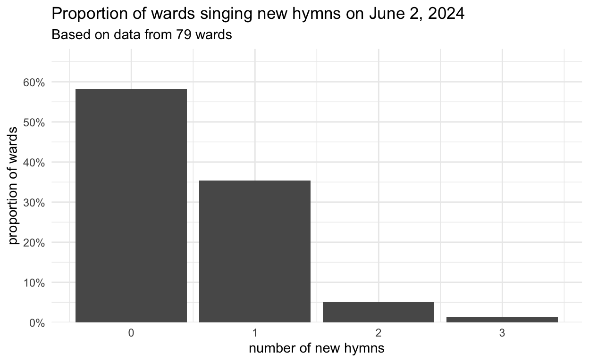

The first Sunday with new hymns!
general
frequency
new hymns
We got new hymns this week and today was the first chance to use them! Between social media and personal connections, I was able to collect hymn data from 93 wards. Let’s see how these new hymns were introduced into these wards!
Note
Note that this blog post will update as I collect more data. I collected data from 54 wards on June 2, but it has grown to 93 since then, which gives a more accurate view of what happened.
First, how many wards sang new hymns? It looks like only about a third. A few wards sang two new hymns and there are even wards that sang three new ones!
Now the real question: what hymns did these wards sing? The table below shows that, probably to no one’s surprise,
| What new hymns were sung on June 2, 2024 | ||
| Based on the wards that sang new hymns | ||
| new hymn | wards | proportion |
|---|---|---|
| Come, Thou Fount of Every Blessing (1001) | 27 | 65.9% |
| It Is Well with My Soul (1003) | 5 | 12.2% |
| As Bread is Broken (1007) | 3 | 7.3% |
| Bread of Life, Living Water (1008) | 2 | 4.9% |
| Gethsemane (1009) | 2 | 4.9% |
| His Eye Is on the Sparrow (1005) | 1 | 2.4% |
| Think a Sacred Song (1006) | 1 | 2.4% |
| When the Savior Comes Again (1002) | 0 | 0.0% |
| I Will Walk with Jesus (1004) | 0 | 0.0% |
| Hail the Day that Sees Him Rise (1201) | 0 | 0.0% |
| He Is Born, the Divine Christ Child (1202) | 0 | 0.0% |
| What Child is This? (1203) | 0 | 0.0% |
| Star Bright (1204) | 0 | 0.0% |
Seven of the 13 introduced hymns were sung in my sample of 93 wards. Interestingly,
Does this mean that
As for when during the meeting these new hymns were introduced, it varied.
| When were new hymns sung in sacramnt meeting? | |||
| New Hymn | Opening | Sacrament | Closing |
|---|---|---|---|
| Come, Thou Fount of Every Blessing (1001) | 11 | 0 | 16 |
| It Is Well with My Soul (1003) | 1 | 0 | 4 |
| His Eye Is on the Sparrow (1005) | 0 | 0 | 1 |
| Think a Sacred Song (1006) | 1 | 0 | 0 |
| As Bread is Broken (1007) | 0 | 3 | 0 |
| Bread of Life, Living Water (1008) | 0 | 2 | 0 |
| Gethsemane (1009) | 0 | 1 | 1 |
That’s it for now. How exciting is it that we have new hymns? I’ll keep you posted as much as I can!
Update: Tom Anderson’s Data
Tom Anderson put a poll on social media asking people what new hymns they sang. He got data from 30 wards an kindly shared the results with me. He found that
So, to combine his data with mine, here is an updated list of what hymns were sung on the first day, based on 65 wards.
| What new hymns were sung on June 2, 2024? | ||
| Based on the wards that sang new hymns | ||
| new hymn | wards | proportion |
|---|---|---|
| Come, Thou Fount of Every Blessing (1001) | 49 | 69.0% |
| It Is Well with My Soul (1003) | 9 | 12.7% |
| As Bread is Broken (1007) | 3 | 4.2% |
| I Will Walk with Jesus (1004) | 3 | 4.2% |
| Bread of Life, Living Water (1008) | 2 | 2.8% |
| Gethsemane (1009) | 2 | 2.8% |
| His Eye Is on the Sparrow (1005) | 2 | 2.8% |
| Think a Sacred Song (1006) | 1 | 1.4% |
| When the Savior Comes Again (1002) | 0 | 0.0% |
| Hail the Day that Sees Him Rise (1201) | 0 | 0.0% |
| He Is Born, the Divine Christ Child (1202) | 0 | 0.0% |
| What Child is This? (1203) | 0 | 0.0% |
| Star Bright (1204) | 0 | 0.0% |